Gambaran Umum ℹ
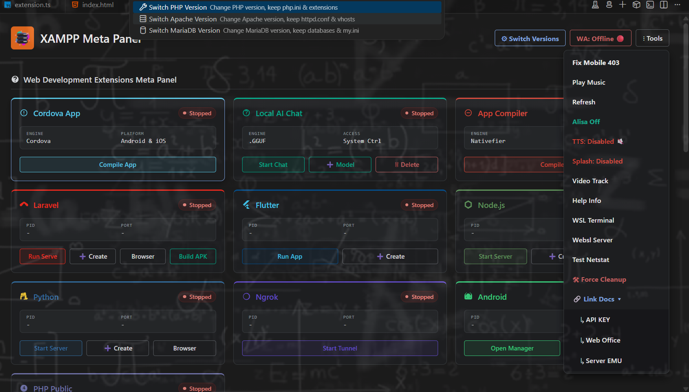
Dokumentasi ini memberikan panduan lengkap mulai dari mengunduh PHP versi baru, memasangnya di XAMPP, hingga memperbaiki error yang terjadi akibat proses upgrade manual pada sistem operasi Windows.
Cara Cepat Untuk Upgrade PHP Di XAMPP Meta Panel:
- Klik Download https://windows.php.net/download
- Klik XAMPP Meta Panel dan pilih Swich PHP pada PHP.
- File Akan Extrak Melalui Patch C:/xampp/php{Version}
- Rename Patch C:/xampp/php Menjadi C:/xampp/php_old
- Setelah Sudah Rename Kembali Patch php{Version}
- Rename Patch C:/xampp/php{Version} Menjadi C:/xampp/php
- Copy Patch php.ini Di Folder Patch C:/xampp/php_old Di pindahkan ke C:/xampp/php
- Lalu Patch C:\xampp\php_old\extras copy file browscap.ini Di pindahkan ke C:/xampp/php/extras
- Lalu Lanjut Ke Langkah Nomor 10
Kesulitan: Menengah (Membutuhkan ketelitian dalam mengedit file konfigurasi dan memilih versi PHP)
1 Unduh Versi PHP Terbaru untuk XAMPP Meta Panel
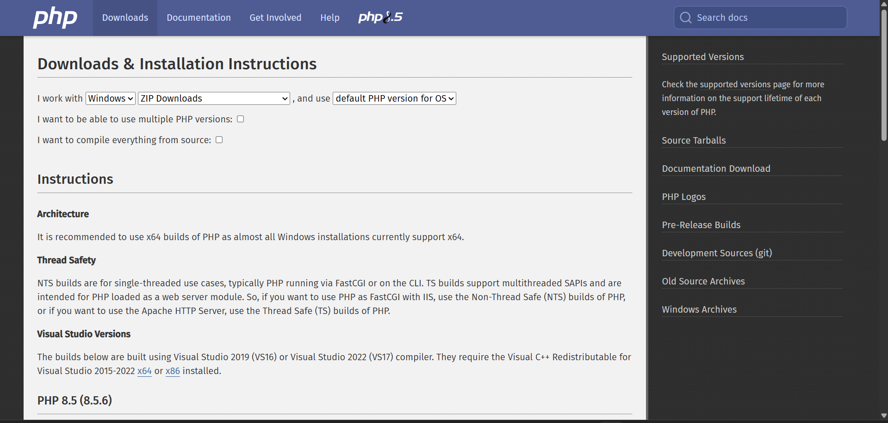
Untuk mengunduh versi PHP terbaru yang siap pakai di Windows dan cocok untuk XAMPP Anda, ikuti langkah berikut agar tidak salah mengambil source code lagi:
1.1. Buka Situs Resmi PHP Windows
Langsung buka browser Anda dan kunjungi halaman resmi unduhan PHP untuk Windows:
1.2. Pilih Versi Terbaru (Misalnya PHP 8.4 atau 8.5)
Di halaman tersebut, Anda akan melihat beberapa pilihan versi. Cari blok versi paling atas (versi stabil terbaru saat ini).
1.3. Cari Bagian "VS16 x64 Thread Safe"
- Pastikan pilih yang ada tulisan Thread Safe. (XAMPP membutuhkan versi Thread Safe, bukan Non-Thread Safe).
- Pastikan arsitekturnya sesuai dengan Windows Anda (biasanya x64 untuk Windows 64-bit modern).
1.4. Klik Link "Zip"
Di bawah tulisan Thread Safe tersebut, cari tulisan Zip (ukurannya sekitar 25-30 MB) lalu klik untuk mengunduhnya.
1.5. Cara Cepat Menggunakan Terminal (Alternatif)
Jika Anda malas membuka browser dan ingin langsung mengunduhnya via Command Prompt (CMD), Anda bisa memanfaatkan fitur bawaan Windows bernama winget.
Cukup buka CMD, lalu ketik perintah berikut untuk langsung mendownload file .zip PHP versi 8.4 terbaru ke folder Anda saat ini:
winget download PHP.PHP.8.4.zip tersebut selesai diunduh, Anda tinggal mengekstrak isinya ke dalam folder C:\xampp\php. Struktur dalamnya dijamin akan langsung rapi dan lengkap dengan file .exe serta .dll!
2 Prasyarat & Persiapan Ekstrak
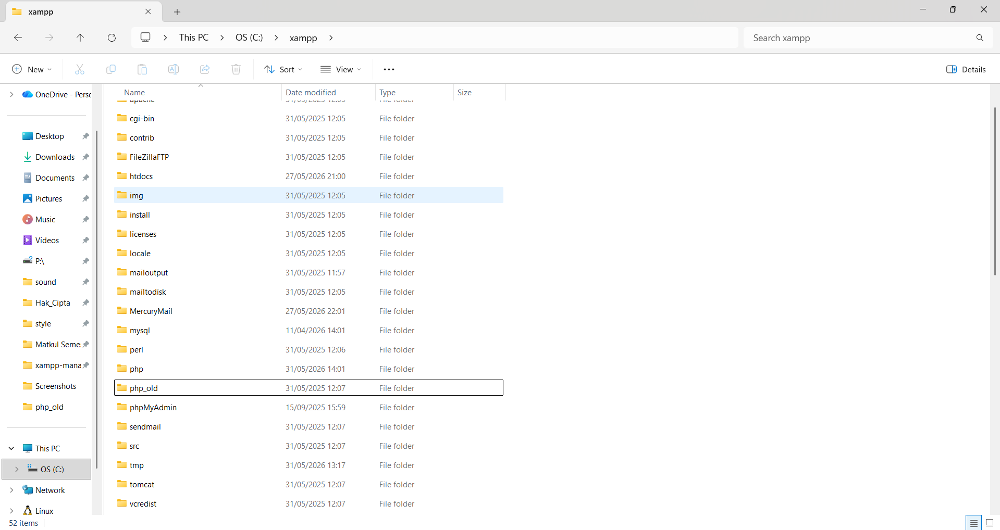
Pastikan hal-hal berikut sudah terpenuhi sebelum memulai konfigurasi:
- XAMPP terinstal di direktori standar (
C:\xampp). - Anda sudah mengekstrak file ZIP PHP baru ke
C:\xampp\php(menggantikan yang lama). - Setelah Selesai Di Extraxt Otomatis muncul patch
C:\xampp\php{version}(php patch baru). - Anda Bisa Backup terlebih dahulu
C:\xampp\phpdan ubah patch php baru keC:\xampp\php_old. - Anda Bisa Merubah File
C:\xampp\php{version}dan ubah patch php baru keC:\xampp\php.
3 Penyebab Error Upgrade PHP
Error biasanya terjadi justru karena efek samping dari menyalin file php.ini lama ke folder PHP baru yang kita lakukan sebelumnya.
Jangan panik, ini masalah umum saat upgrade PHP. Ikuti langkah-langkah di bawah ini untuk memperbaikinya.
4 Gunakan File Konfigurasi Bawaan PHP Baru
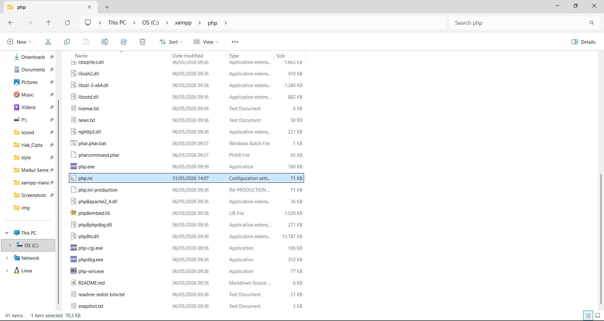
Kita akan membuang file php.ini lama yang tidak kompatibel, dan menggantinya dengan template bawaan dari PHP yang baru.
- Masuk ke folder
C:\xampp\phpyang baru. - Hapus file
php.iniyang ada di sana (file hasil kopian sebelumnya). - Cari file bernama
php.ini-development(direkomendasikan untuk development). - Ubah nama (rename) file tersebut menjadi
php.ini.
5 Aktifkan Ekstensi yang Diperlukan
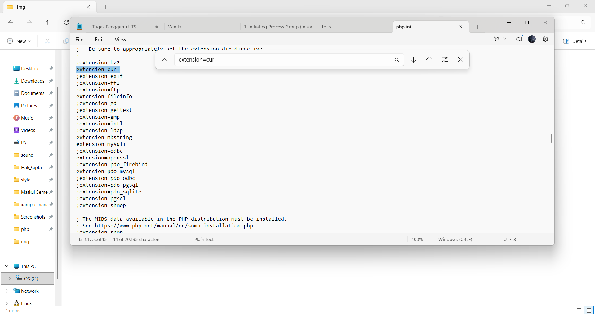
Karena kita menggunakan file konfigurasi yang segar, kita perlu mengaktifkan ulang ekstensi penting agar XAMPP berjalan normal.
A. Mengatur Jalur Extension Directory
- Buka file
php.iniyang baru saja Anda ganti namanya tadi menggunakan Notepad. - Cari baris berikut (Gunakan
Ctrl + F):
;extension_dir = "ext"Ubah dengan menghapus tanda titik koma (;) di depannya dan sesuaikan jalurnya menjadi:
extension_dir = "C:\xampp\php\ext"B. Mengaktifkan OpenSSL & Ekstensi Lainnya
- Cari baris openssl:
;extension=opensslHapus tanda titik koma (;) di depannya agar menjadi aktif:
extension=opensslextension=openssl yang aktif di dalam file ini untuk menghindari error "Module already loaded".
Cari dan aktifkan juga beberapa ekstensi penting lainnya dengan menghapus tanda titik koma (;) di depannya:
extension=curlextension=fileinfoextension=mbstringextension=mysqliextension=pdo_mysql
6 Perbaiki Jalur browscap.ini
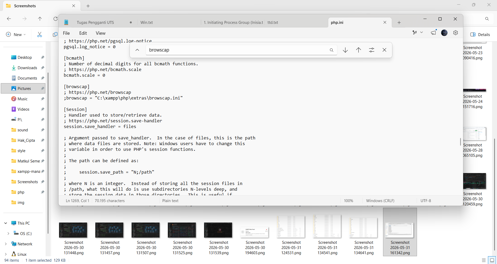
Error Cannot open "\xampp\php\extras\browscap.ini" muncul karena PHP baru tidak menemukan file tersebut di folder extras.
- Masih di dalam file
php.ini, cari katabrowscap. - Anda akan menemukan baris seperti ini:
;browscap = "C:\xampp\php\extras\browscap.ini"- Jika Anda tidak terlalu membutuhkan fitur deteksi browser, biarkan saja baris tersebut memiliki tanda titik koma (
;) di depannya (tetap di-comment). PHP baru secara default mematikannya, dan itu akan menghilangkan error tersebut.
- Jika Memang Diperlukan, Hapus Tanda Titik Koma (
;) di depannya agar menjadi aktif: - bisa kalian pindahkan browscap.ini ke folder C:\xampp\php\extras\ dari path C:\xampp\php_old\
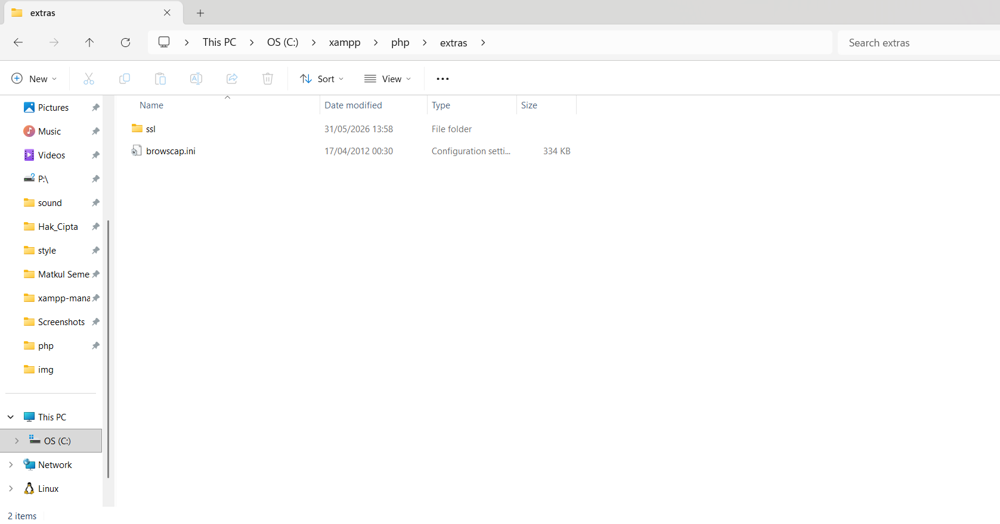
browscap = "C:\xampp\php\extras\browscap.ini"7 Simpan dan Restart Apache
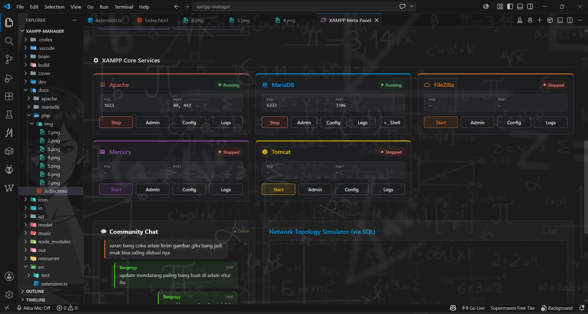
- Simpan perubahan pada file
php.ini(Ctrl + S). - Buka XAMPP Control Panel, klik Stop pada Apache, lalu klik Start kembali.
Unable to start standard module biasanya otomatis hilang setelah extension_dir diarahkan ke folder yang benar (C:\xampp\php\ext) pada Langkah 5.
8 Verifikasi dan Pengujian
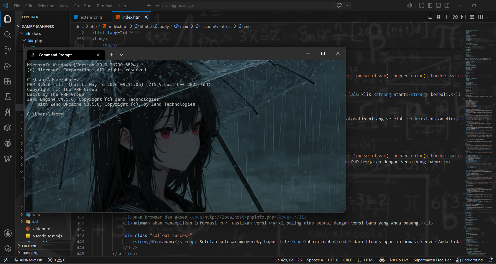
Setelah Apache berhasil menyala tanpa error, lakukan pengecekan berikut untuk memastikan PHP berjalan dengan versi yang baru:
- Buka folder
C:\xampp\htdocs. - Buat file baru bernama
phpinfo.php. - Buka file tersebut dengan Notepad dan isi dengan kode berikut:
<?php
phpinfo();
?>http://localhost/phpinfo.php.phpinfo.php dari htdocs agar informasi server Anda tidak terekspos ke publik.
9 Prosedur Rollback
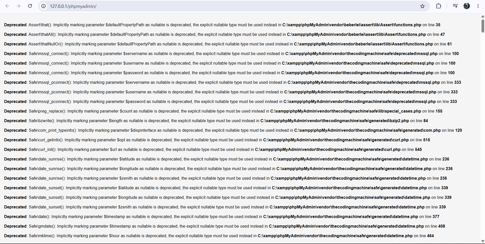
Jika terjadi hal yang tidak diinginkan atau aplikasi Anda tidak kompatibel dengan PHP versi baru, Anda dapat mengembalikan PHP ke versi sebelumnya:
- Stop Apache dari XAMPP Control Panel.
- Rename folder
C:\xampp\phpyang baru menjadiC:\xampp\php_new_failed. - Rename folder
C:\xampp\php_oldkembali menjadiC:\xampp\php. - Konfigurasi lama Anda akan kembali aktif. Start Apache kembali.
- 👉 Jikalau Ingin Melanjutkan Upgrade PHP Di Xampp Meta Panel ikuti Step Ke 10
10 Troubleshooting PhpMyAdmin
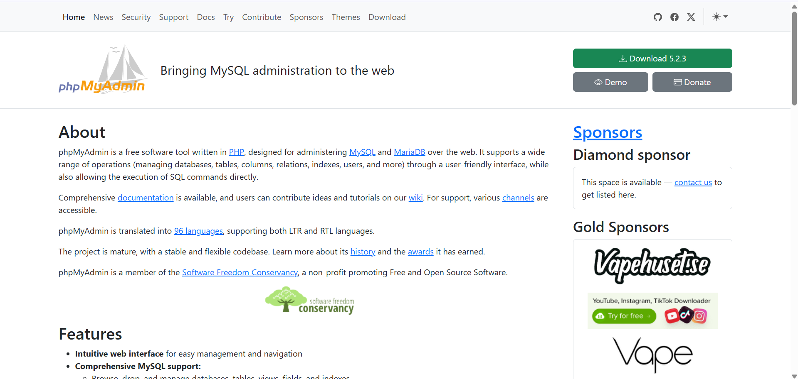
Download SQL Server
👉 https://www.phpmyadmin.net/downloads/
Download SQL Server dan install di komputer Anda.
11 Exekuasi PhpMyAdmin
Eksekuasi Mengganti Versi PhpMyAdmin
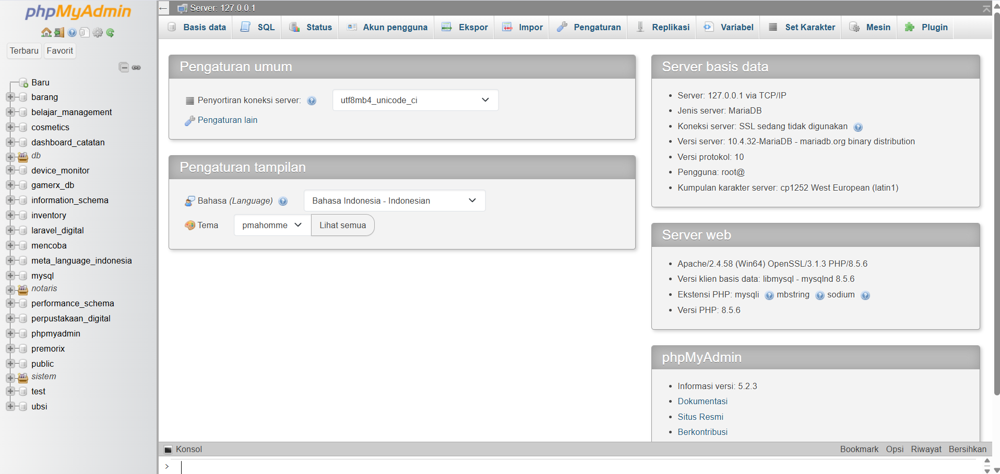
Setelah di download kalian bisa switch versi PhpMyAdmin dengan versi yang baru di Xampp Meta Panel.
Setelah Sudah Masuk ke Folder C:/xampp/
Kalian ubah folder C:/xampp/PhpMyAdmin Menjadi C:/xampp/PhpMyAdmin_old
Setelah sudah kalian copy File patch "config.inc.php"
Di copy di folder C:/xampp/PhpMyAdmin_old di pindahkan ke C:/xampp/PhpMyAdmin Versi Baru
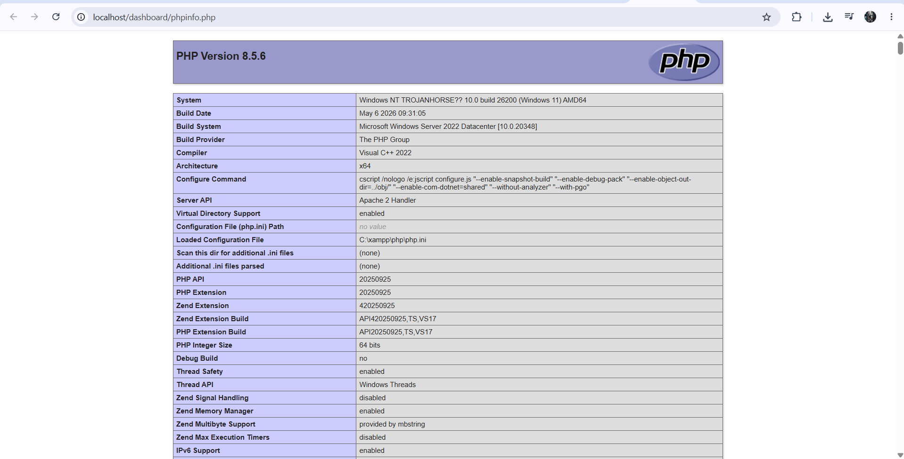
Lalu Cek Kembali Versi Php nya di localhost/dashboard/phpinfo.php
Kalian Bisa Menjalankan PhpMyAdmin Dan Juga Php Di Versi Terbaru
Kalian Restart Apache dan Mariadb nya lalu jalankan kembali PhpMyAdmin
12 Cookies Bug Web Server
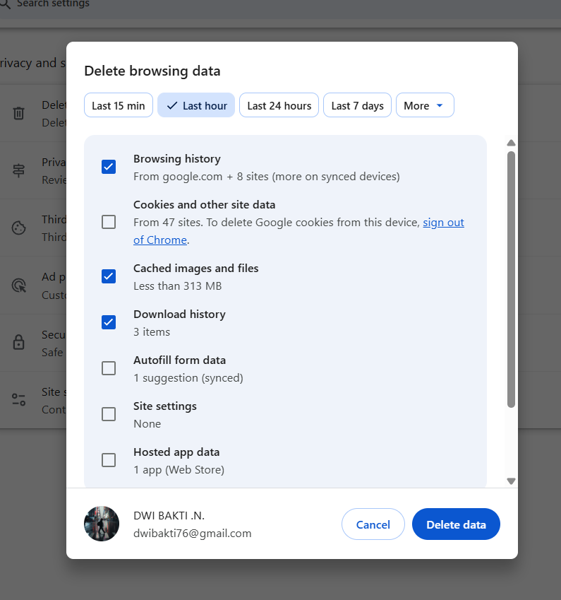
Jikalau Masih Terjadi bug kalian Bisa hapus Cookies
Cara nya kalian cukup centang :
1. Ctrl + Shift + Del
2. cookies And Other Site Data
3. Chached Image and Files
4. Setelah itu delete data
Jikalau Tidak Terjadi Apa Apa dan masih Normal dan berhasil Tidak Perlu Di Hapus